Self-study web lesson. Each section matches one slide in the PowerPoint.
Main formulas
v = s/t · a = Δv/Δt · s = vt · v = at
Derivative chain
x → v → a · v = dx/dt · a = dv/dt
Medical link
Wheelchair, bed, lift, scanner table, cart.
Lesson map
- 1. Kinematics for Medical Equipment
- 2. From Statics to Kinematics
- 3. Why Kinematics Matters in Hospitals
- 4. Position
- 5. Distance
- 6. Displacement
- 7. Distance vs Displacement
- 8. Speed
- 9. Speed Example
- 10. Velocity
- 11. Speed vs Velocity
- 12. What Is Acceleration?
- 13. Acceleration Formula
- 14. Acceleration Example
- 15. Positive and Negative Acceleration
- 16. Position–Time Graph
- 17. Speed–Time Graph
- 18. Why Do We Need Derivatives?
- 19. Derivative Idea: Small Steps
- 20. Derivative Notation
- 21. Position → Velocity → Acceleration
- 22. Constant Speed
- 23. Constant Speed Example
- 24. Motion from Rest
- 25. Motion from Rest Example
- 26. Task 1: Speed
- 27. Task 2: Time
- 28. Task 3: Distance
- 29. Task 4: Acceleration
- 30. Task 5: Slowing Down
- 31. Task 6: From Rest
- 32. Task 7: Mixed Task
- 33. Common Mistakes
- 34. Summary
Part 1 — What Is Kinematics?
Kinematics describes motion. We do not study forces yet.
Kinematics for Medical Equipment
Position. Speed. Velocity. Acceleration.
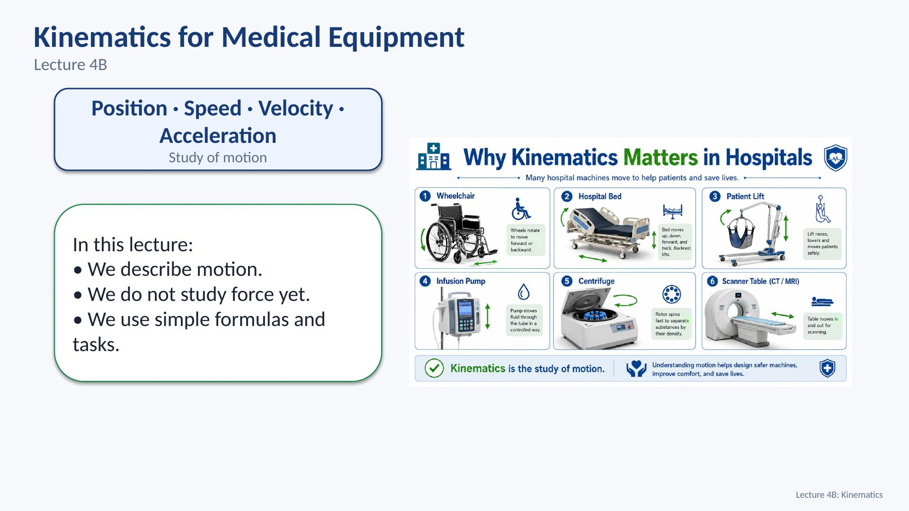
Today we study kinematics. Kinematics means motion.
We describe how objects move. We do not ask why they move yet.
Forces will come in the next lecture: dynamics.
Today we use simple formulas and many small tasks.
Think and answer
What does kinematics study?
Show answer
Motion. It describes how objects move.
From Statics to Kinematics
Statics: no movement. Kinematics: movement.
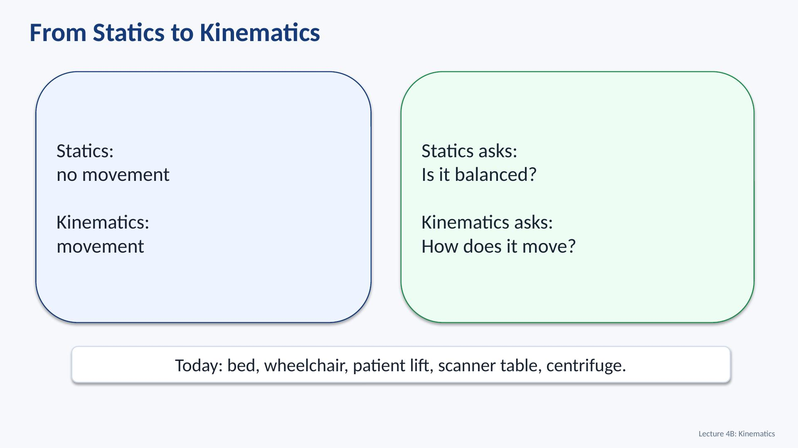
Last time we studied statics. The object did not move.
Today objects can move: a bed, a wheelchair, a lift, a cart, or a scanner table.
Statics asks: Is it balanced?
Kinematics asks: How does it move?
Think and answer
What is the main difference between statics and kinematics?
Show answer
Statics studies objects at rest. Kinematics studies motion.
Why Kinematics Matters in Hospitals
Many hospital machines move.
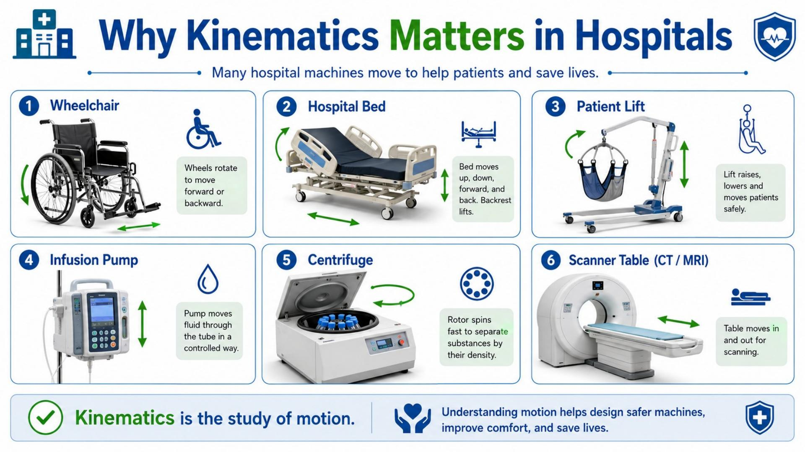
A wheelchair moves along the floor.
A hospital bed can move forward, backward, up, and down.
A patient lift moves a patient slowly and safely.
A scanner table moves a patient into a machine.
We need simple words to describe this motion.
Think and answer
Name one hospital machine that moves.
Show answer
Wheelchair, bed, patient lift, scanner table, cart, centrifuge.
Part 2 — Position, Distance, and Displacement
First we describe where something is and how far it moves.
Position
Position = where something is.
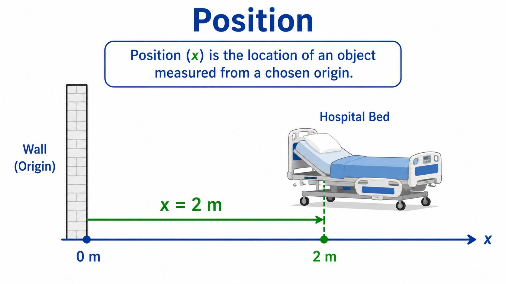
Position tells us where an object is.
We can describe position with a number.
Example: a bed is 2 meters from the wall.
If the bed moves, the position changes.
Think and answer
What does position mean?
Show answer
Where something is.
Distance
Distance = how much path.
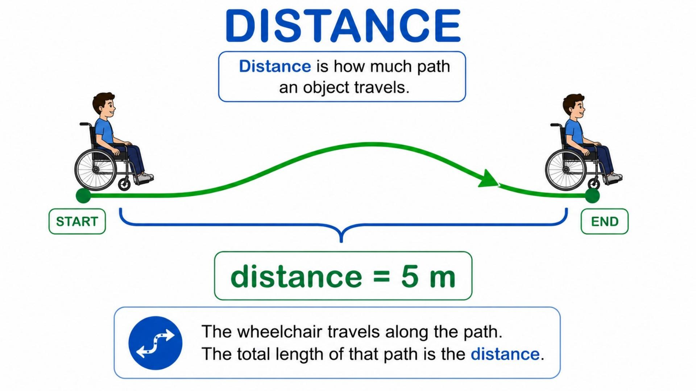
Distance means the total path traveled.
Distance is always positive.
If a wheelchair moves 5 meters, the distance is 5 meters.
Distance does not tell direction.
Think and answer
Can distance be negative?
Show answer
No. Distance is always positive.
Displacement
Displacement = change in position.
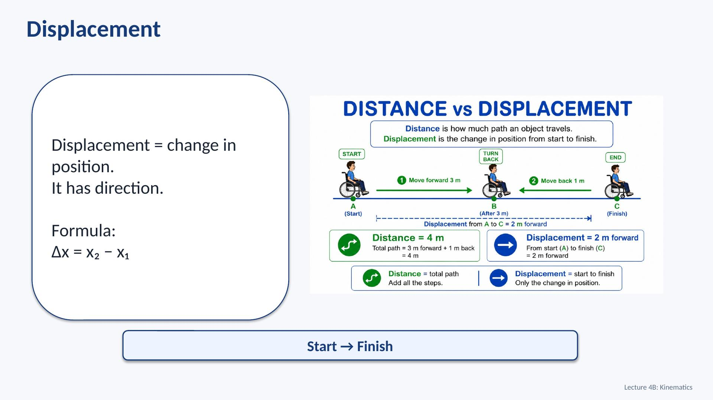
Displacement means start position to finish position.
It has direction.
Formula: Δx = x₂ − x₁.
Displacement can be positive, negative, or zero.
Think and answer
What formula do we use for displacement?
Show answer
Δx = x₂ − x₁.
Distance vs Displacement
Distance is total path. Displacement is start to finish.
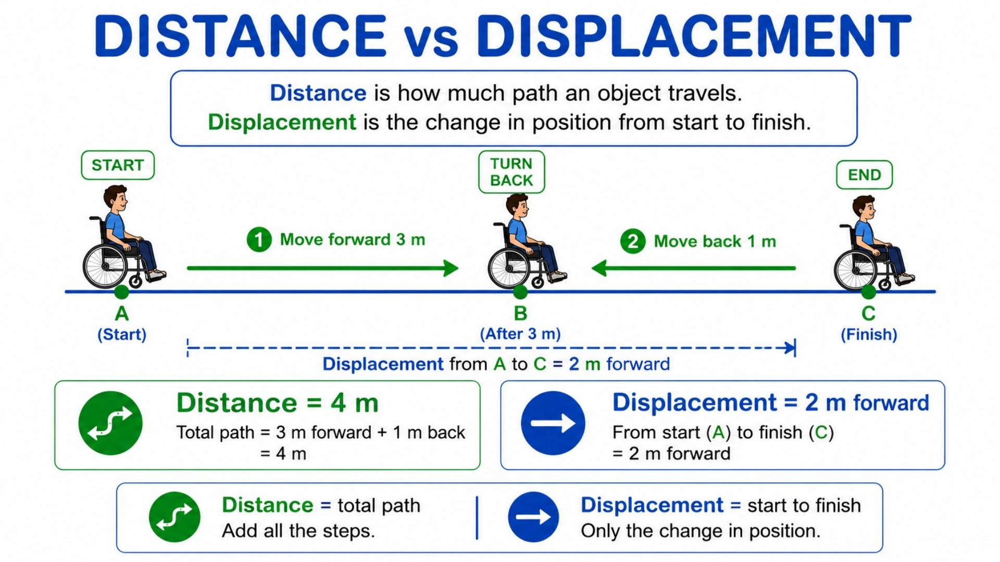
Distance and displacement can be different.
Example: move forward 3 m, then back 1 m.
Total distance is 4 m.
Displacement is 2 m forward.
Think and answer
If you move forward 3 m and back 1 m, what is the distance?
Show answer
4 m.
Part 3 — Speed, Velocity, and Acceleration
We learn the main formulas for motion.
Speed
Speed = distance / time.
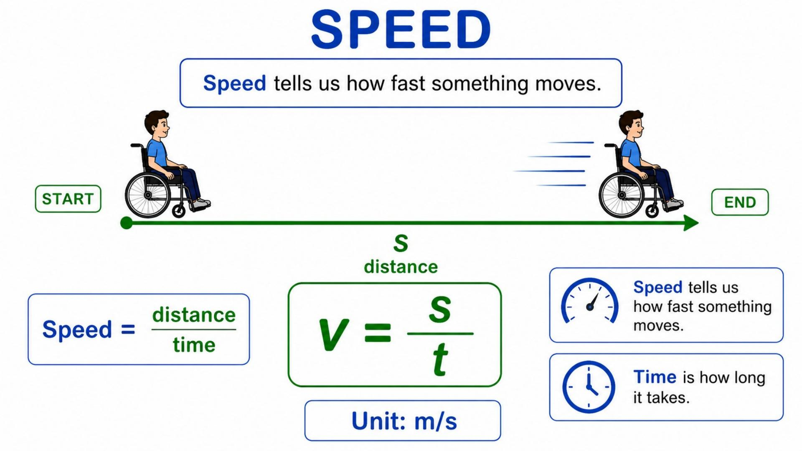
Speed tells us how fast something moves.
Formula: v = s / t.
Unit: m/s.
If distance is large and time is small, speed is high.
Think and answer
What is the formula for speed?
Show answer
v = s / t.
Speed Example
A wheelchair moves 12 m in 6 s.
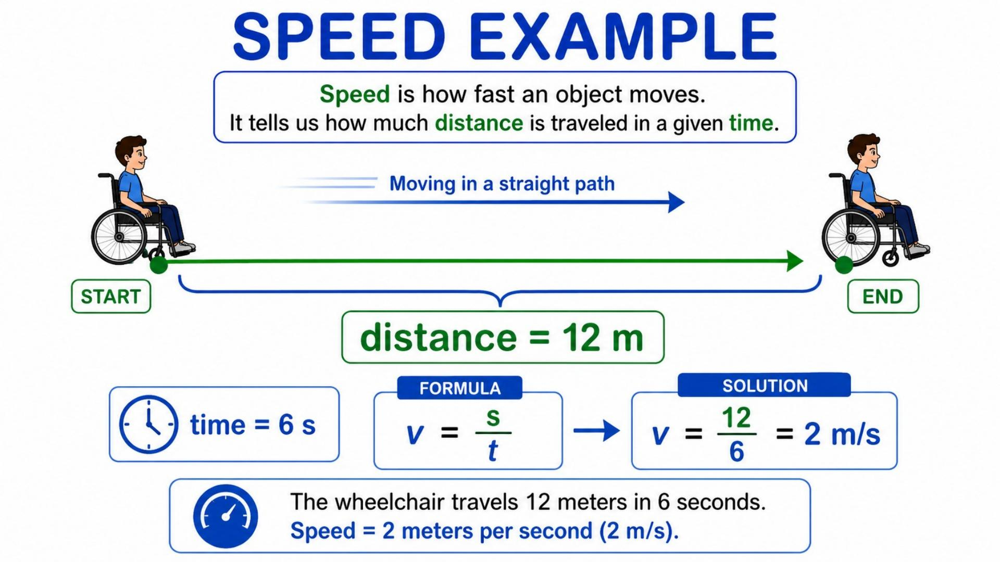
We calculate speed using v = s / t.
Distance is 12 meters.
Time is 6 seconds.
v = 12 / 6 = 2 m/s.
Think and answer
What is the speed?
Show answer
2 m/s.
Velocity
Velocity = speed + direction.
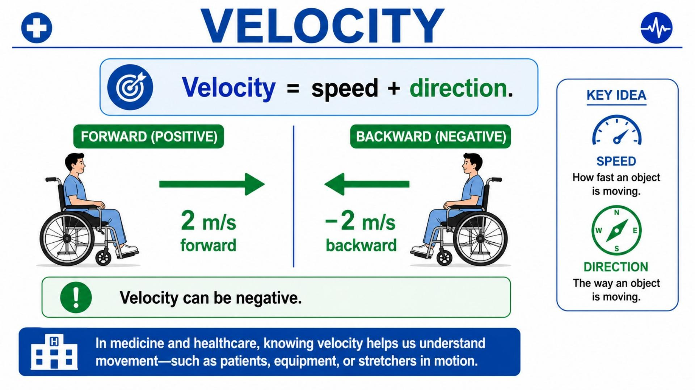
Speed only tells how fast.
Velocity tells how fast and in what direction.
Example: speed is 2 m/s.
Velocity is 2 m/s forward.
Velocity can be negative if the object moves in the opposite direction.
Think and answer
What does velocity include that speed does not?
Show answer
Direction.
Speed vs Velocity
Speed has no direction. Velocity has direction.
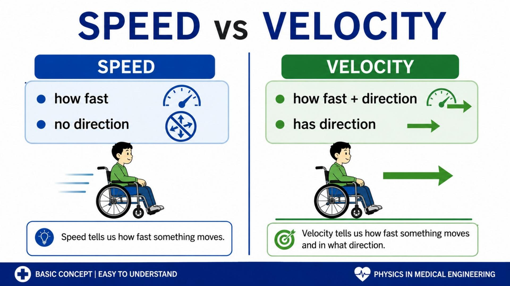
Speed is a scalar.
Velocity is a vector.
For this class, remember the simple idea:
Speed = how fast.
Velocity = how fast and where.
Think and answer
Is velocity a vector?
Show answer
Yes. It has direction.
What Is Acceleration?
Acceleration = change of velocity.
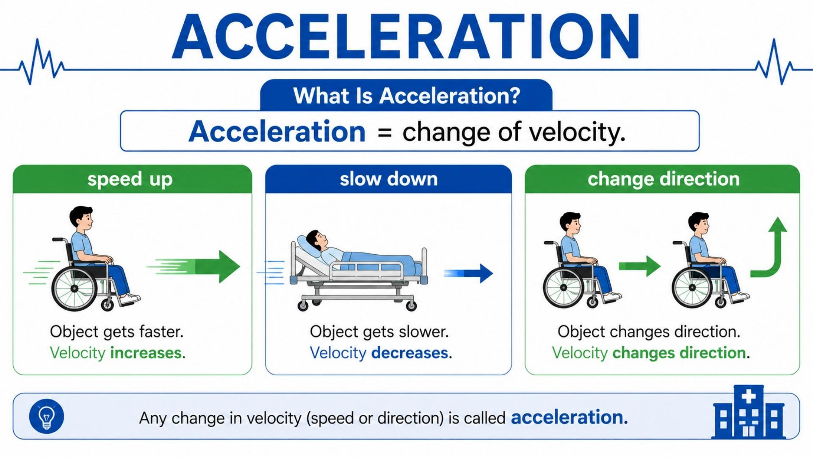
Acceleration means velocity changes.
The object can speed up.
The object can slow down.
The object can change direction.
All of these are acceleration.
Think and answer
Can slowing down be acceleration?
Show answer
Yes. It is negative acceleration.
Acceleration Formula
Acceleration = change in velocity / time.
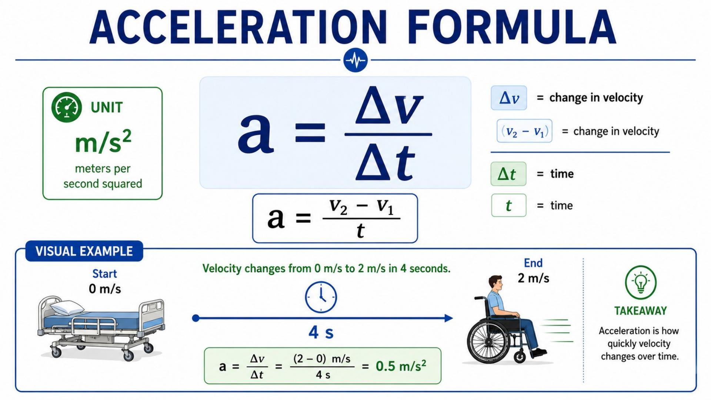
Formula: a = Δv / Δt.
Also: a = (v₂ − v₁) / t.
Unit: m/s².
If velocity changes a lot in a short time, acceleration is large.
Think and answer
What is the unit of acceleration?
Show answer
m/s².
Acceleration Example
A bed changes speed.
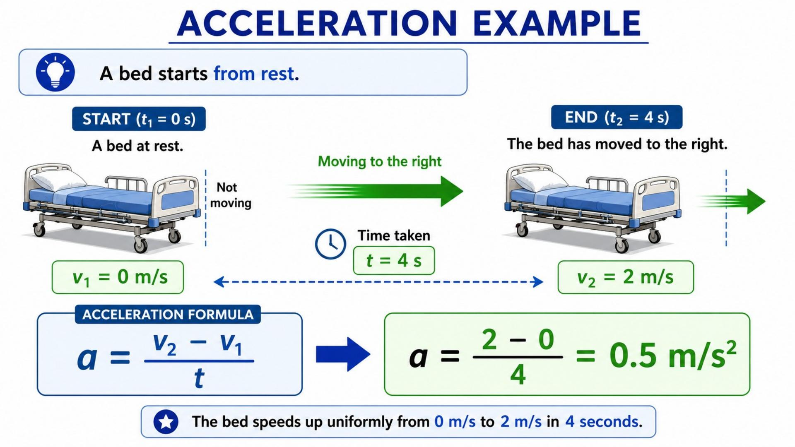
A bed starts from rest: v₁ = 0 m/s.
Later the bed moves at v₂ = 2 m/s.
Time is t = 4 s.
a = (2 − 0) / 4 = 0.5 m/s².
Think and answer
What is the acceleration?
Show answer
0.5 m/s².
Positive and Negative Acceleration
Speed up is positive. Slow down is negative.
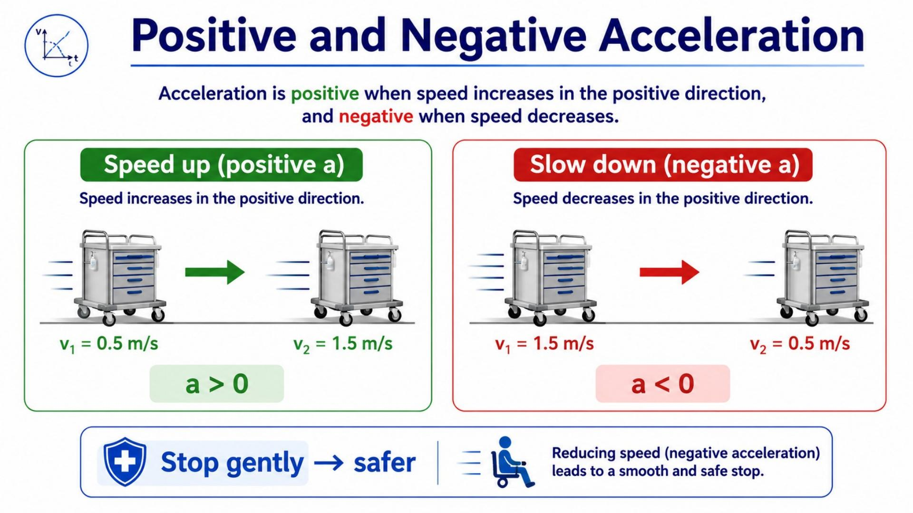
If speed increases in the positive direction, acceleration is positive.
If speed decreases in the positive direction, acceleration is negative.
In hospitals, sudden starts and stops can be dangerous.
Gentle stopping is safer for patients.
Think and answer
Why should hospital equipment stop gently?
Show answer
Because sudden motion can be unsafe for patients.
Part 4 — Graphs and Derivatives
Graphs and derivatives show change with time.
Position–Time Graph
Steeper line = faster motion.
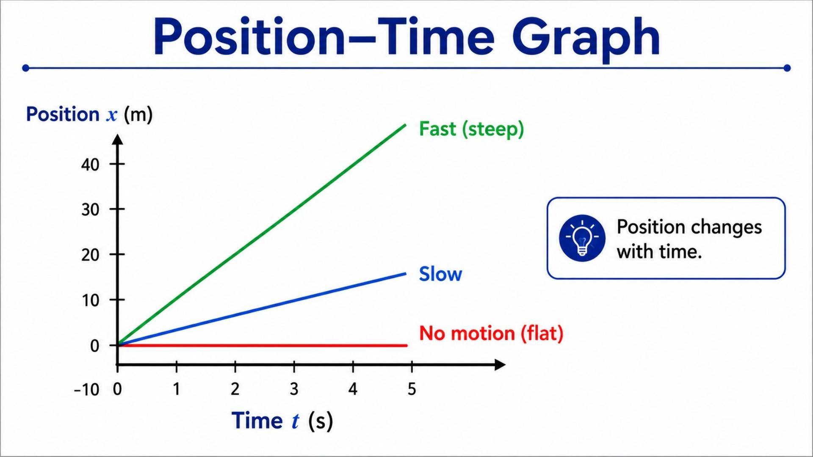
A position-time graph shows where an object is at each time.
If the line is flat, the object does not move.
If the line is steep, the object moves faster.
The slope shows velocity.
Think and answer
What does a flat position-time graph mean?
Show answer
No movement.
Speed–Time Graph
Rising line = acceleration.
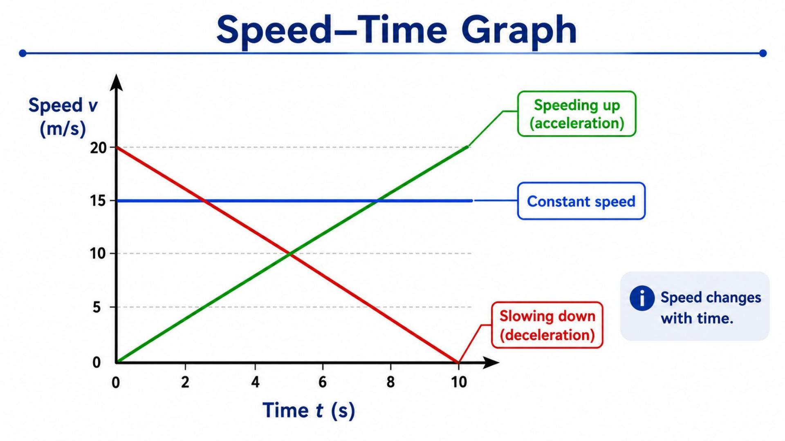
A speed-time graph shows speed at each time.
A flat line means constant speed.
A rising line means speeding up.
A falling line means slowing down.
Think and answer
What does a rising speed-time graph mean?
Show answer
Acceleration / speeding up.
Why Do We Need Derivatives?
A derivative shows change.
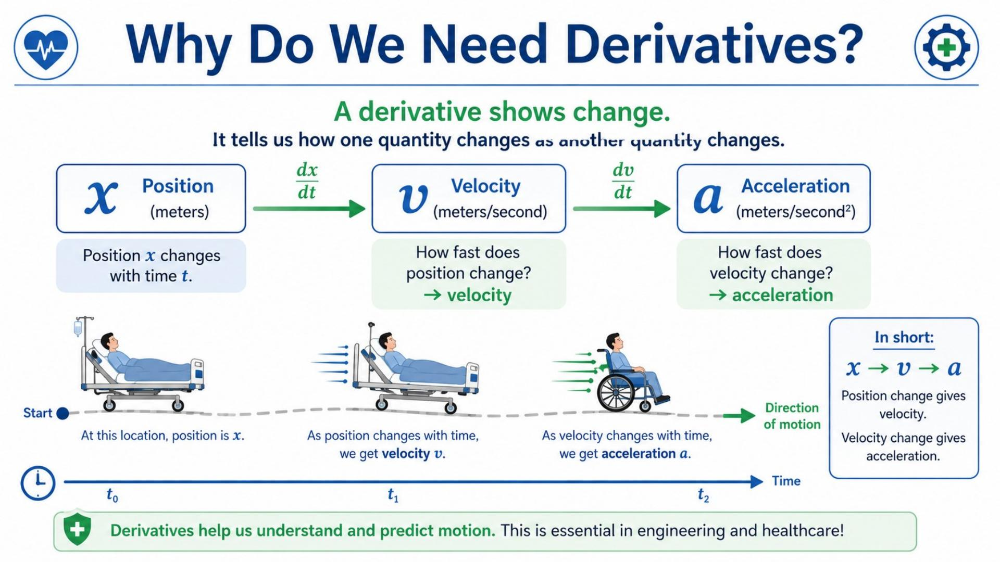
A derivative means rate of change.
How fast does position change? That gives velocity.
How fast does velocity change? That gives acceleration.
This is the main idea. Do not be afraid of the notation.
Think and answer
What does a derivative show?
Show answer
How fast something changes.
Derivative Idea: Small Steps
Look at very small time.
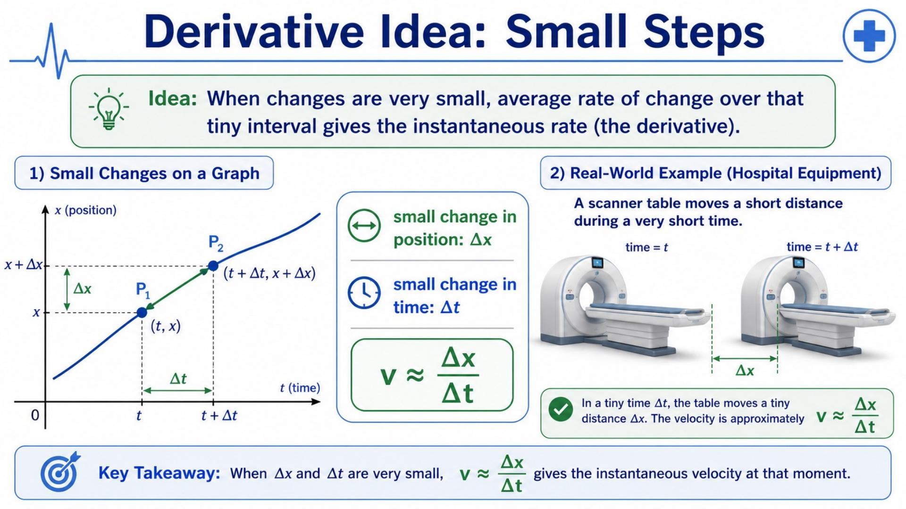
Take a very small time interval Δt.
During this time, position changes by Δx.
Velocity is approximately Δx / Δt.
When Δt becomes very small, this idea becomes a derivative.
Think and answer
What does Δx / Δt mean?
Show answer
Change in position divided by change in time.
Derivative Notation
v = dx/dt and a = dv/dt.
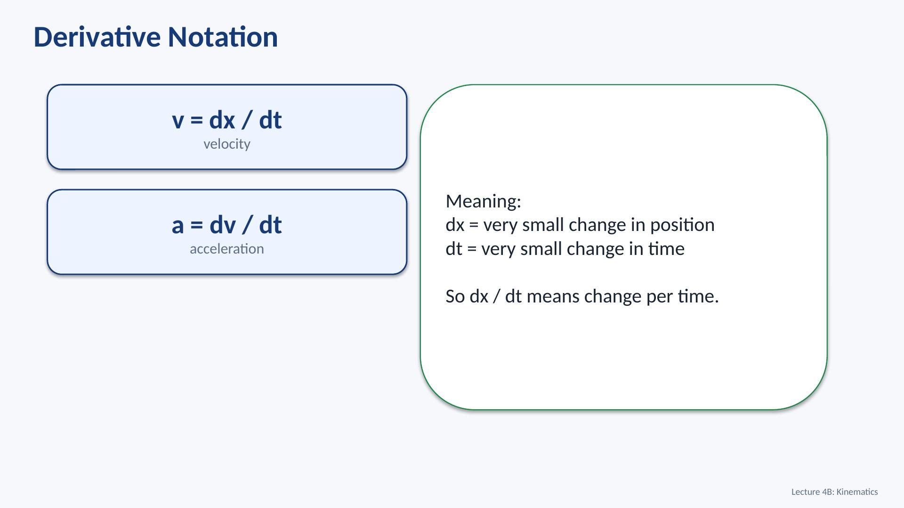
dx means a very small change in position.
dt means a very small change in time.
v = dx/dt means velocity is change of position per time.
a = dv/dt means acceleration is change of velocity per time.
Think and answer
What does dx/dt mean in this lesson?
Show answer
Velocity.
Position → Velocity → Acceleration
x → v → a.
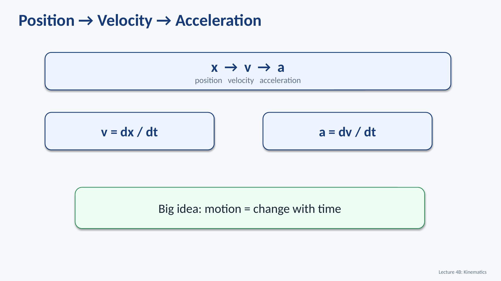
This is the most important chain.
Position changes with time, and we get velocity.
Velocity changes with time, and we get acceleration.
Motion means change with time.
Think and answer
What do we get when position changes with time?
Show answer
Velocity.
Part 5 — Constant Speed and Motion from Rest
Now we use formulas for simple motion.
Constant Speed
Constant speed means speed does not change.
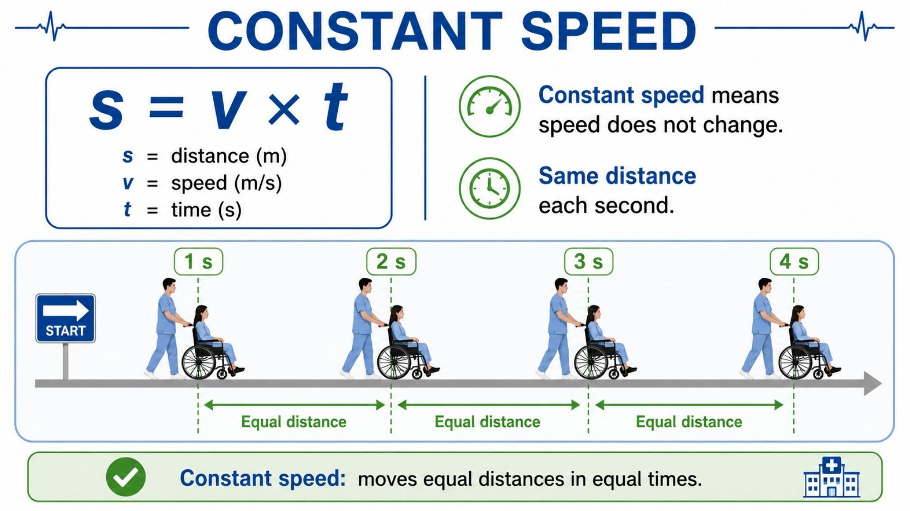
At constant speed, the object moves the same distance every second.
Formula: s = v × t.
This is useful for simple cart and wheelchair movement.
Think and answer
What is the formula for distance at constant speed?
Show answer
s = v × t.
Constant Speed Example
A cart moves at 1.5 m/s for 8 s.
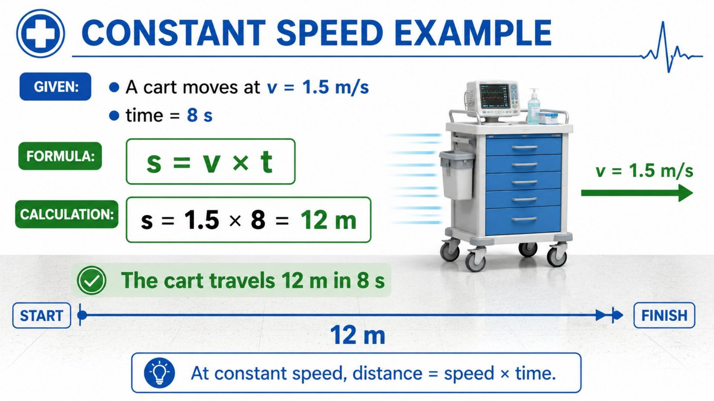
The speed is constant.
Use s = v × t.
s = 1.5 × 8.
s = 12 m.
Think and answer
How far does the cart move?
Show answer
12 m.
Motion from Rest
If object starts from rest, v = a × t.
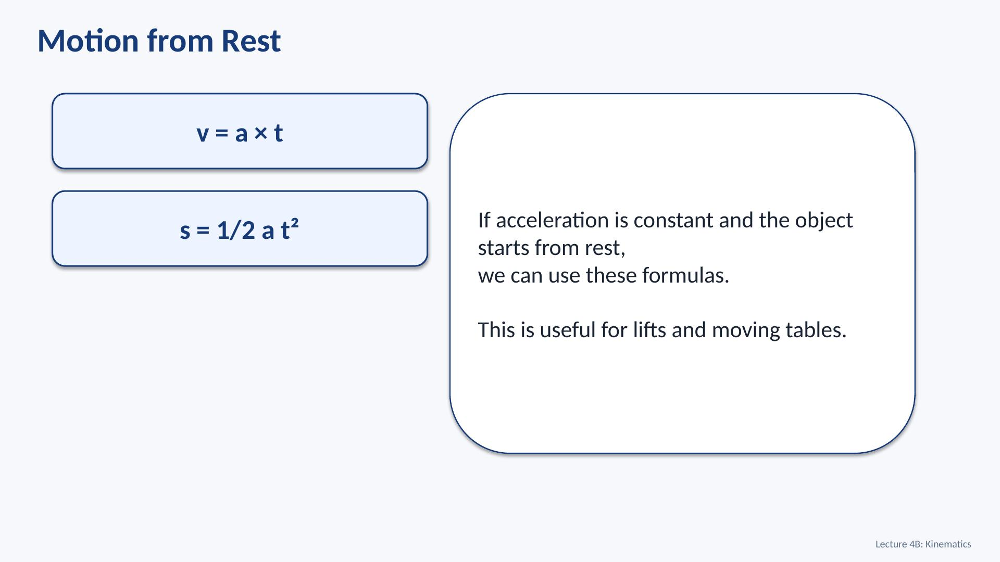
Starts from rest means the first velocity is zero.
If acceleration is constant, final velocity is v = a × t.
Distance can be calculated by s = 1/2 a t².
This is useful for lifts and moving tables.
Think and answer
What does 'starts from rest' mean?
Show answer
Initial velocity is zero.
Motion from Rest Example
A lift starts from rest.
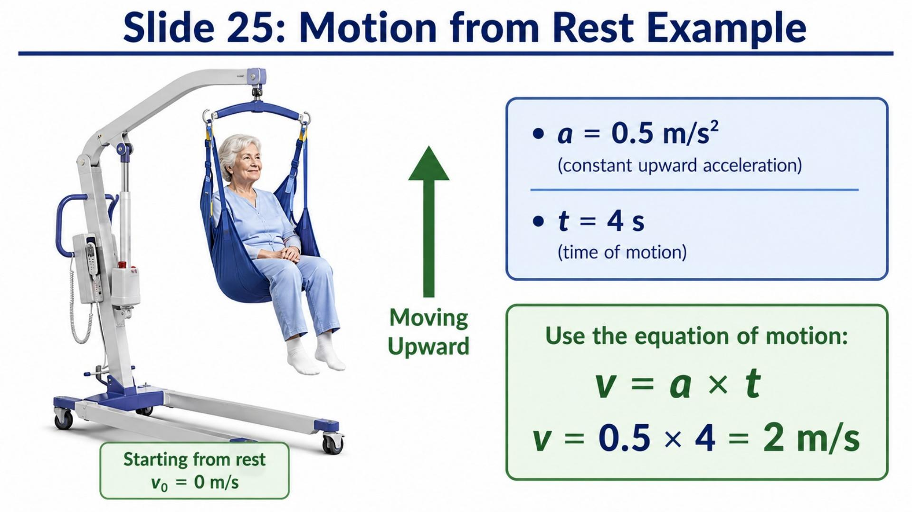
A patient lift starts from rest.
Acceleration is a = 0.5 m/s².
Time is t = 4 s.
Use v = a × t.
v = 0.5 × 4 = 2 m/s.
Think and answer
What is the final velocity?
Show answer
2 m/s.
Part 6 — Practice Tasks and Summary
Solve small tasks. Check units carefully.
Task 1: Speed
A wheelchair moves 10 m in 5 s.
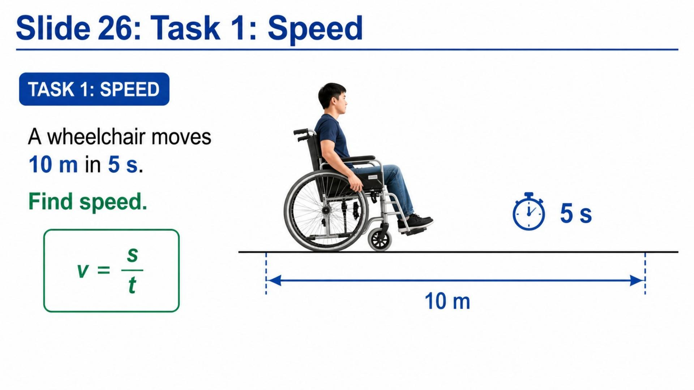
This is the simplest speed task.
Use v = s / t.
Distance is 10 m.
Time is 5 s.
v = 10 / 5 = 2 m/s.
Think and answer
Find the speed.
Show answer
2 m/s.
Task 2: Time
A cart moves 18 m at 3 m/s.
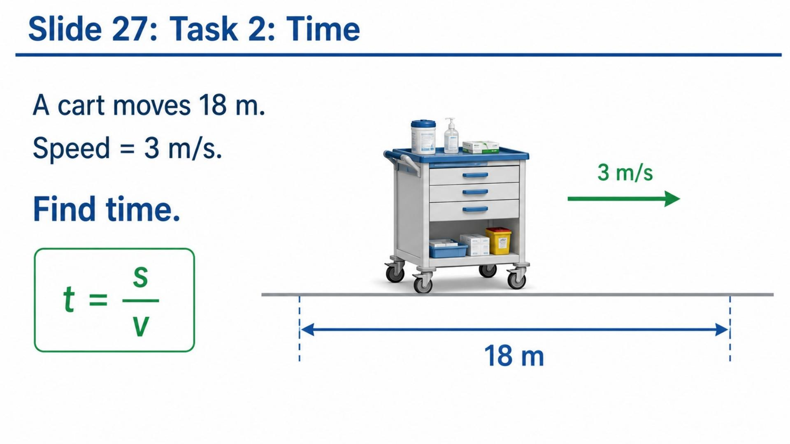
Now we find time.
Use t = s / v.
Distance is 18 m.
Speed is 3 m/s.
t = 18 / 3 = 6 s.
Think and answer
Find the time.
Show answer
6 s.
Task 3: Distance
A scanner table moves at 0.4 m/s for 10 s.
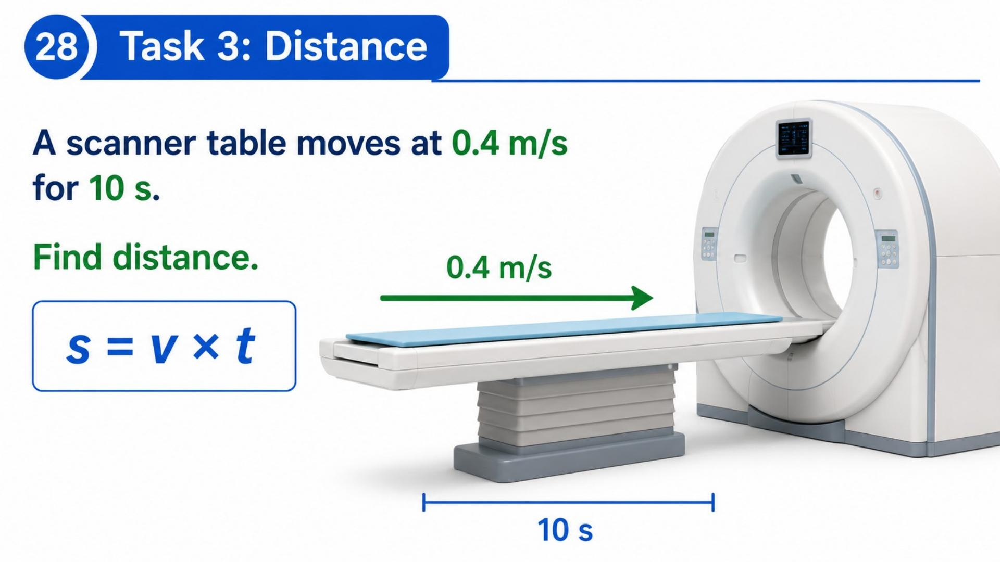
Use s = v × t.
Speed is 0.4 m/s.
Time is 10 s.
s = 0.4 × 10 = 4 m.
Think and answer
Find the distance.
Show answer
4 m.
Task 4: Acceleration
A bed changes speed from 0 to 1.2 m/s in 3 s.
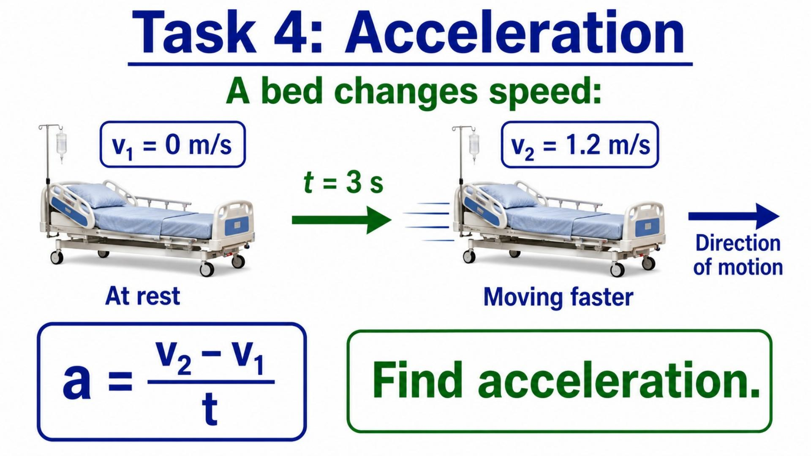
Use a = (v₂ − v₁) / t.
v₁ = 0 m/s.
v₂ = 1.2 m/s.
t = 3 s.
a = 1.2 / 3 = 0.4 m/s².
Think and answer
Find the acceleration.
Show answer
0.4 m/s².
Task 5: Slowing Down
A cart slows from 2 m/s to 0 m/s in 4 s.
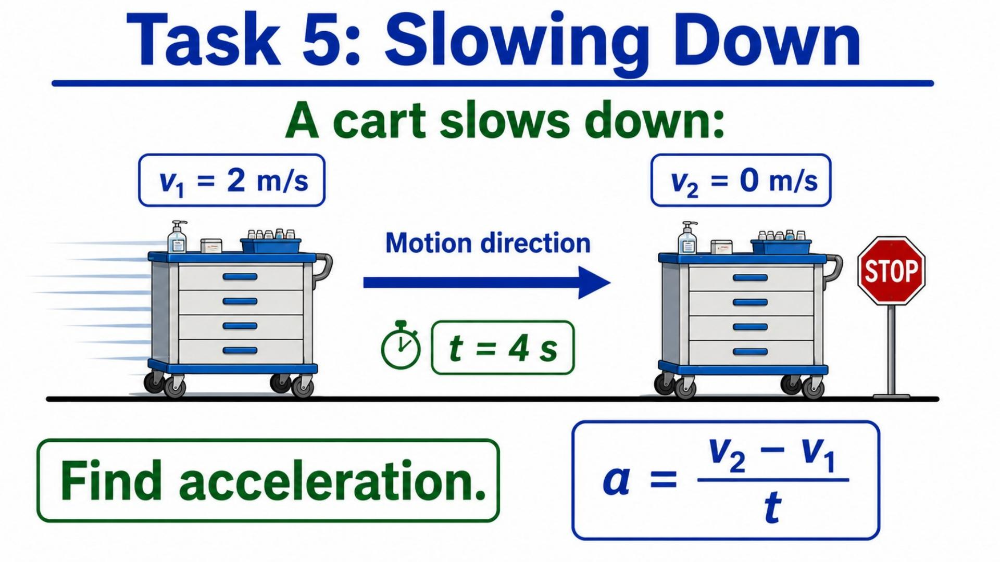
Use a = (v₂ − v₁) / t.
v₁ = 2 m/s.
v₂ = 0 m/s.
t = 4 s.
a = (0 − 2) / 4 = −0.5 m/s².
Negative means slowing down.
Think and answer
Find the acceleration.
Show answer
−0.5 m/s².
Task 6: From Rest
A lift starts from rest.
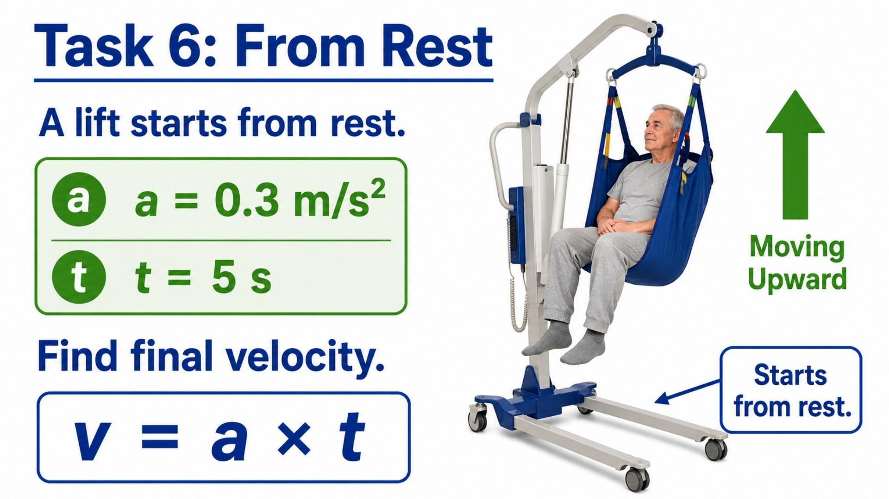
Acceleration is a = 0.3 m/s².
Time is t = 5 s.
Use v = a × t.
v = 0.3 × 5 = 1.5 m/s.
Think and answer
Find the final velocity.
Show answer
1.5 m/s.
Task 7: Mixed Task
A wheelchair moves in two parts.
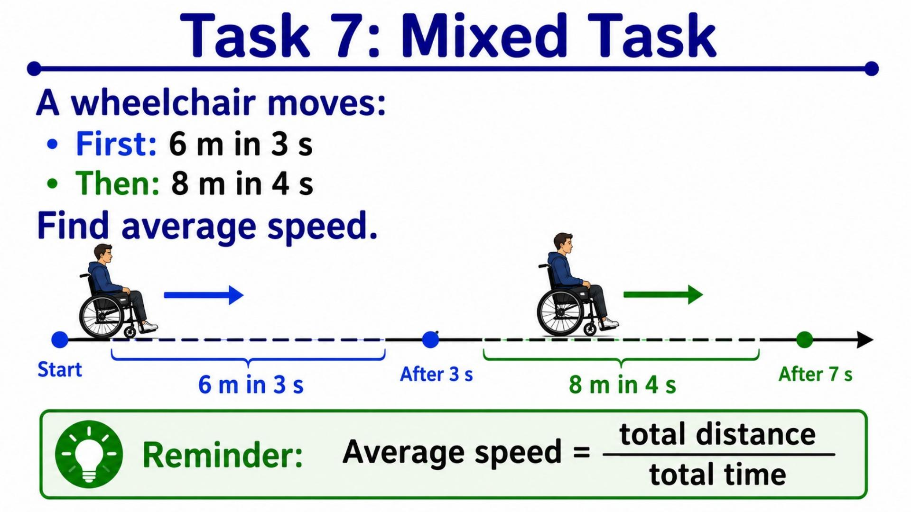
First: 6 m in 3 s.
Then: 8 m in 4 s.
Total distance is 14 m.
Total time is 7 s.
Average speed = 14 / 7 = 2 m/s.
Think and answer
Find the average speed.
Show answer
2 m/s.
Common Mistakes
Do not confuse the basic words and units.
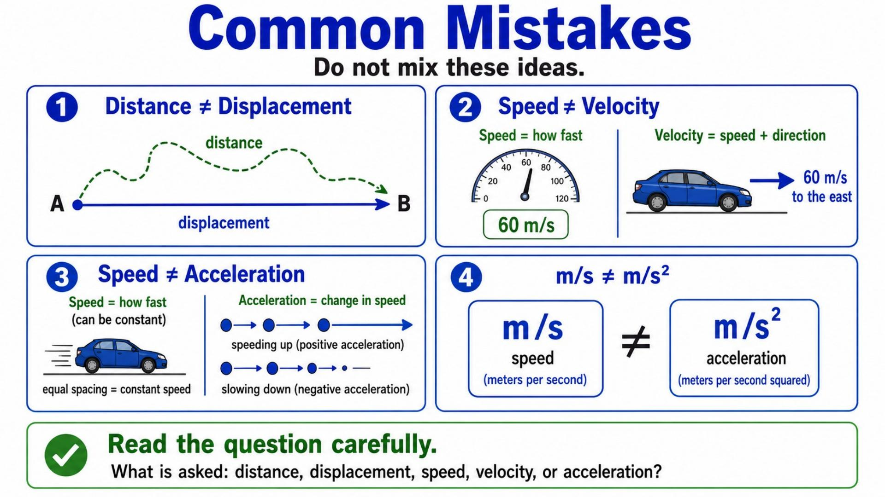
Do not confuse distance and displacement.
Do not confuse speed and velocity.
Do not confuse speed and acceleration.
Do not confuse m/s and m/s².
These mistakes are common, so check units carefully.
Think and answer
What is the unit of speed?
Show answer
m/s.
Summary
Motion = change with time.
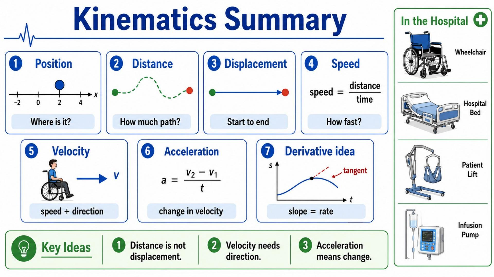
Today we learned position, distance, displacement, speed, velocity, acceleration, and derivatives.
Velocity is change of position with time.
Acceleration is change of velocity with time.
Next: dynamics. Dynamics asks why motion changes.
Think and answer
What is the next mechanics topic?
Show answer
Dynamics.
{kind=link}